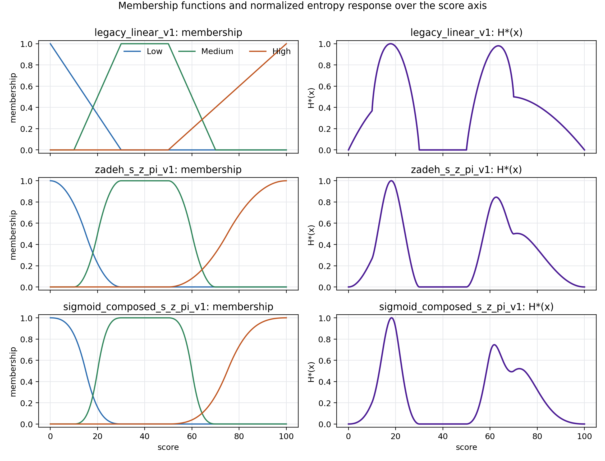

Membership Specification and Sensitivity Reporting for
Fuzzy-Entropy-Based LLM Emotion Scoring
白濵 成希1 / 中谷 直史2 / 渡邉 志3
発表者：下関市立大学 データサイエンス学部 白濵 成希
1下関市立大学 2順天堂大学 3静岡理工科大学
第42回 ファジィ システム シンポジウム / FSS2026
2026年9月2日–4日
前研究では、正解率だけでなく、
連続的な感情強度・応答の安定性・解釈の多様性・スコアの曖昧さを記述した
本発表では、このうち「スコアの曖昧さ」を測る記述子に焦点を絞る。
同じ条件で毎回 $x=25$ を出す
→ 応答としては安定
しかし、$25$ が Low と Medium の境界なら、
言語ラベルとしては遷移的
$x=40$：Medium が支配的
→ クリスプに近い
$x=25$：Low と Medium が重なる
→ 曖昧さが高い可能性
応答の変動と、スコアの言語的な曖昧さは別の概念
連続スコアが Low / Medium / High のどの境界に位置するかを、
ファジィエントロピーで記述する
同じ 0–100 スコア $x$
＋
同じエントロピー式
→
同じ $H^*(x)$ ？
必ずしも同じではない
Low / Medium / High への写像、つまり
メンバシップ関数仕様が変わると、エントロピー応答も変わる
$H^*(x)$：ラベルの重なり曖昧性を、その関数族内で 0〜1 にそろえた値
何を仕様化し、版管理し、感度確認すれば、$H^*(x)$ を再現・解釈できるか？
LLMを比べる前に、0〜100のスコアを測る「ものさし」を点検する
$$ H_{\mathrm{raw}}(x) =-\sum_{\ell \in {L,M,H}}\mu_\ell(x)\log_2\mu_\ell(x), \qquad 0\log_2 0:=0 $$
$$ H^*(x)=H_{\mathrm{raw}}(x) / H_{\max}^{\mathrm{grid}} $$
そのスコアでの重なり曖昧性 ÷ その関数族で得られる最大値
関数族＝Low・Medium・Highの3本を一組として作る「曲線設計の規則」
| 項目 | 区間 |
|---|---|
| Low transition | $[0,30]$ |
| Medium rise | $[10,30]$ |
| Medium plateau | $[30,50]$ |
| Medium fall | $[50,70]$ |
| High transition | $[50,100]$ |
| family ID | 特徴 | $H_{\max}^{grid}$ |
|---|---|---|
legacy_linear_v1 | $C^0$ 区分線形 | 1.0577 |
zadeh_s_z_pi_v1 | $C^1$ 二次 S/Z/pi | 1.0524 |
sigmoid_composed_s_z_pi_v1 | ロジスティックワープ＋S/Z/pi | 1.0184 |
エントロピーを計算した「測定器の仕様書」

読み方： 形状・滑らかさの違い → ピークの高さ・幅・局所的な肩の違い
注意： これはLLM出力のヒストグラムではなく、仕様のスコア軸応答
| 族ペア | 最大絶対差 $\max|\Delta H^*|$ | 平均絶対差 $\mathrm{mean}|\Delta H^*|$ | $x_{\max}$ | 領域 |
|---|---|---|---|---|
| linear – S/Z/pi | 0.343 | 0.110 | 26.3 | Low–Medium |
| linear – sigmoid-composed | 0.481 | 0.158 | 25.3 | Low–Medium |
| S/Z/pi – sigmoid-composed | 0.167 | 0.048 | 24.0 | Low–Medium |
3組すべてで、最大の局所差は Low–Medium 遷移領域に現れた
真値に対する「誤差」ではなく、代替仕様の応答曲線間の「差」。
同じ25.3点が、仕様によって
区分線形では H* = 0.676 にも、sigmoid合成では H* = 0.195 にも読まれる
最大局所差：0.481
各曲線は族固有の $H_{\max}^{\mathrm{grid}}$ で別々に正規化。共通の絶対尺度における48.1%差ではない。
目的は「最良の族」の選択ではなく、
選択を可視化・版管理・感度確認できるようにすること
ファジィエントロピー値を単独で報告しない
仕様カード ＋ 応答曲線 ＋ 感度比較を、一つの再現可能な報告単位にする
日本学術振興会科学研究費助成事業（JSPS KAKENHI）
本研究の一部は、課題番号 26K14983 および 24K13350 の支援を受けた。
ご支援ならびに関係者の皆様に、深く感謝申し上げます。
ご質問をお願いいたします
ファジィエントロピー型LLM感情評価における
メンバシップ関数仕様と感度報告
白濵 成希 / 下関市立大学nshirahama@ieee.org
| 項目 | 記録する内容 |
|---|---|
| スコア範囲 | 閉区間。ここでは [0, 100] |
| スコアグリッド | 応答と $H_{max}^{grid}$ の推定に用いるグリッド |
| ラベル | Low / Medium / High |
| ブレークポイント | ラベル遷移と中央領域 |
| family ID | バージョン付き関数族識別子 |
| 滑らかさ | 連続性クラスまたは滑らかさ規約 |
| 端点挙動 | 厳密・クリップ・漸近的処理 |
| エントロピー式 | $H_{raw}(x)$ と $0 log_2 0 := 0$ |
| 正規化 | 族別 $H_{max}^{grid}$ と推定グリッド |
| バージョン管理 | artifact ID / config hash / 生成スクリプト版 |
スコア範囲： [0, 100] 開始： 0 終了： 100
刻み： 0.1 点数： 1001
| family ID | 滑らかさ | 端点挙動 | $H_{\max}^{\mathrm{grid}}$ |
|---|---|---|---|
legacy_linear_v1 | $C^0$ 区分線形 | 端点を0/1に固定 | 1.0577 |
zadeh_s_z_pi_v1 | $C^1$ 区分二次 | 端点を0/1に固定 | 1.0524 |
sigmoid_composed_s_z_pi_v1 | 非クリップ区間で $C^1$ | 端点を0/1に固定 内部を[0,1]にクリップ | 1.0184 |
共通ブレークポイント：Low [0,30]、Medium rise [10,30]、plateau [30,50]、fall [50,70]、High [50,100]。
比較対象は非順序の関数族ペア。モデルや観測頻度は含まない。
| 族ペア | 最大 |ΔH*| | 平均 |ΔH*| | x_max | 遷移領域 | 積分 |ΔH*| |
|---|---|---|---|---|---|
legacy_linear_v1– zadeh_s_z_pi_v1 | 0.343 | 0.110 | 26.3 | Low–Medium 10–30 | 11.018 |
legacy_linear_v1– sigmoid_composed_s_z_pi_v1 | 0.481 | 0.158 | 25.3 | Low–Medium 10–30 | 15.824 |
zadeh_s_z_pi_v1– sigmoid_composed_s_z_pi_v1 | 0.167 | 0.048 | 24.0 | Low–Medium 10–30 | 4.817 |
凍結 family_sensitivity_matrix.csv の値を小数第3位に丸めて表示。
書誌情報は提出原稿の参考文献に基づく。
A. 本研究は普遍的な最良族を選びません。選択の明示と代替族への感度確認を求めます。
A. いいえ。選択したファジィ分割が与える所属度であり、ラベル上の確率分布ではありません。
A. いいえ。仕様がスコア軸上に割り当てる重なりの大きさです。
A. いいえ。前研究は動機づけであり、本発表はスコア軸上の記述子仕様を扱います。
Q. それぞれ、どのような形と役割を持つ関数ですか？
所属度 1 → 0
スコアが高くなるほど
Lowらしさが減る
所属度 0 → 1 → 0
中央の台地と
両側の滑らかな遷移
所属度 0 → 1
スコアが高くなるほど
Highらしさが増す
πは円周率ではなく、曲線の形に由来する名称。
区分線形族と意味的な区切りは同じで、区間のつなぎ方を滑らかにした設計。
artifacts/fss2026/membership_specification_v1/
| 項目 | 実在する例 | 何を記録するか |
|---|---|---|
| 設定 | configs/fss/ | スコア範囲、0.1刻み、ラベル、関数族、端点、正規化方法 |
| グリッド | membership_grid.csventropy_response_grid.csv | 1001点 × 3族について、所属度と $H_{\mathrm{raw}}$、$H^*$、$H_{\max}$ |
| カード | membership_specification_card.csv.tex 版も生成 | 族ID、滑らかさ、端点処理、ブレークポイント、族別 $H_{\max}$ |
| 図 | figure1_membership_and_ | メンバシップ曲線と $H^*$ 応答を、人間が視覚的に確認 |
| 感度行列 | family_sensitivity_matrix.csv.tex 版も生成 | 族ペアの最大差、平均差、最大差の位置、積分差 |
一つの設定から、機械可読な表・確認用の図・比較結果を一式として生成する
membership_specification_v1
成果物一式を人間が識別し、フォルダや報告から参照する名前
f955b8c6a309b4c1a89115862a40561a5e2fdb05528de2e3f91f5a1065d69de0
使用した設定ファイルが1バイトも変わっていないことを確認するSHA-256指紋
workflow_scripts: 5 paths
記録済み：生成スクリプトのパス
未記録：generator_version / source_commit
現状：生成スクリプトの場所は追跡できるが、厳密なコード版はGit履歴で補助確認する。
次版：source_commit または generator_version を成果物要約へ固定する。
名前で束ね、hashで設定を照合し、生成版で計算コードを固定する
曲線の挙動が切り替わるスコア上の位置
遷移区間の境界と外側で所属度を決める規則
※クリップは所属度を有効範囲へ収める処理であり、データの切り捨てではない。
同じブレークポイントでも、関数族や端点処理が異なれば
曲線と $H^*$ が変わり得るため、両方を記録する